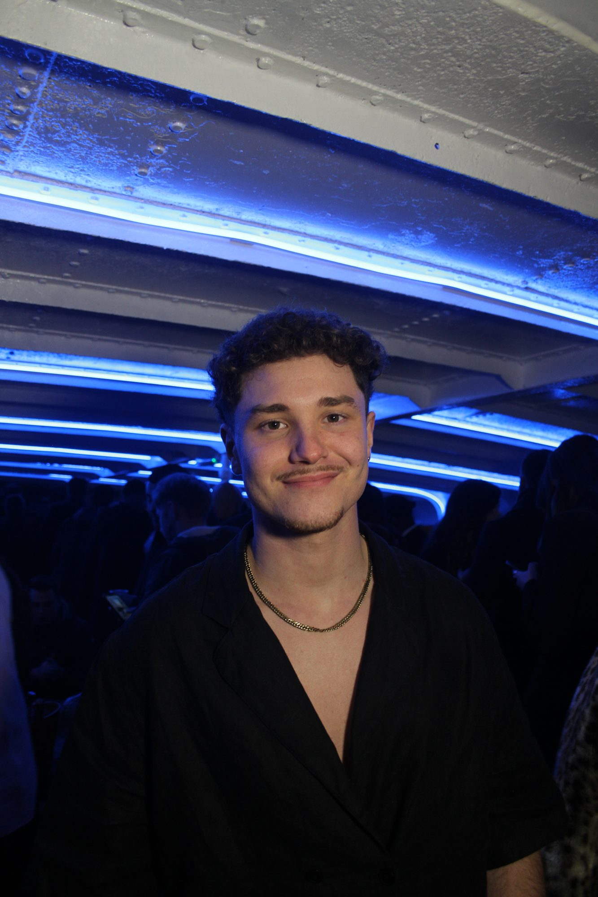
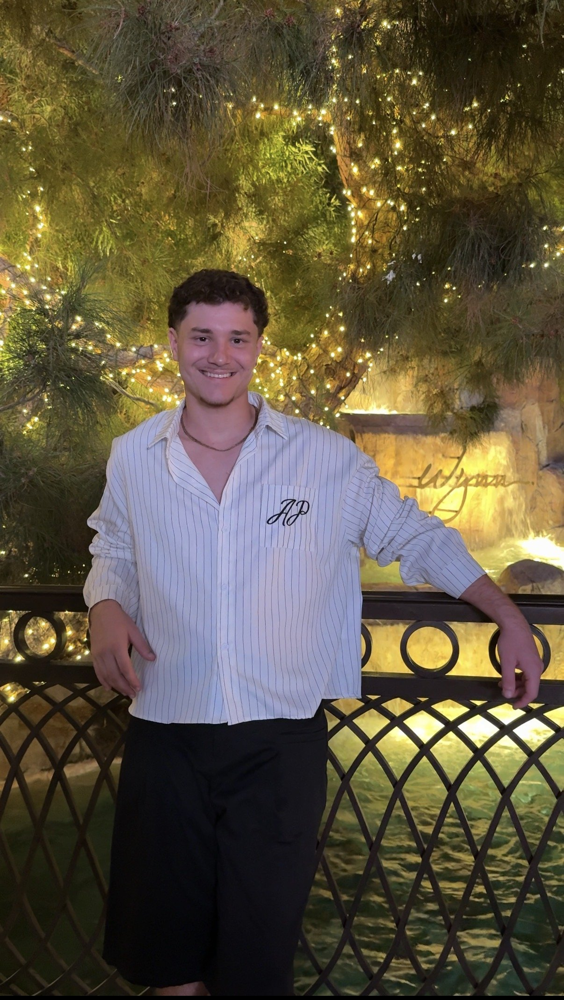

Je ne me contente pas de piloter votre stratégie sociale : j'audite, je planifie et je produis aussi le contenu qui va avec. Un seul interlocuteur, de l'onboarding à la publication.

Chaque collaboration démarre par le même socle : comprendre le compte avant d'y toucher. Clique sur une étape pour découvrir le document concret que je produis à chaque fois.
Analyse complète du compte : profil, contenu, légendes, planning, communauté.
Objectifs, audience cible, piliers de contenu et fréquence de publication.
Planning de contenu organisé par pilier, format et date de publication.
Analyse mensuelle des statistiques et ajustement de la stratégie.
En plus de la stratégie, je tourne et monte moi-même des vidéos UGC, pour apporter à votre compte une matière fraîche et authentique, sans multiplier les prestataires.
Au-delà du tournage, j'ai travaillé la direction artistique globale du compte : cohérence des couleurs, cadrages et rythme de publication, pour que chaque contenu, qu'il s'agisse d'une vidéo, d'une photo plat, d'un portrait d'équipe ou d'une affiche d'événement, soit immédiatement identifiable comme venant du même restaurant.

Basé à Montpellier et Bordeaux, je travaille avec des marques et créateurs de toutes tailles, en France comme à l'international, qui veulent une gestion de réseaux sociaux cohérente, sans jongler entre un community manager et un créateur de contenu séparés.